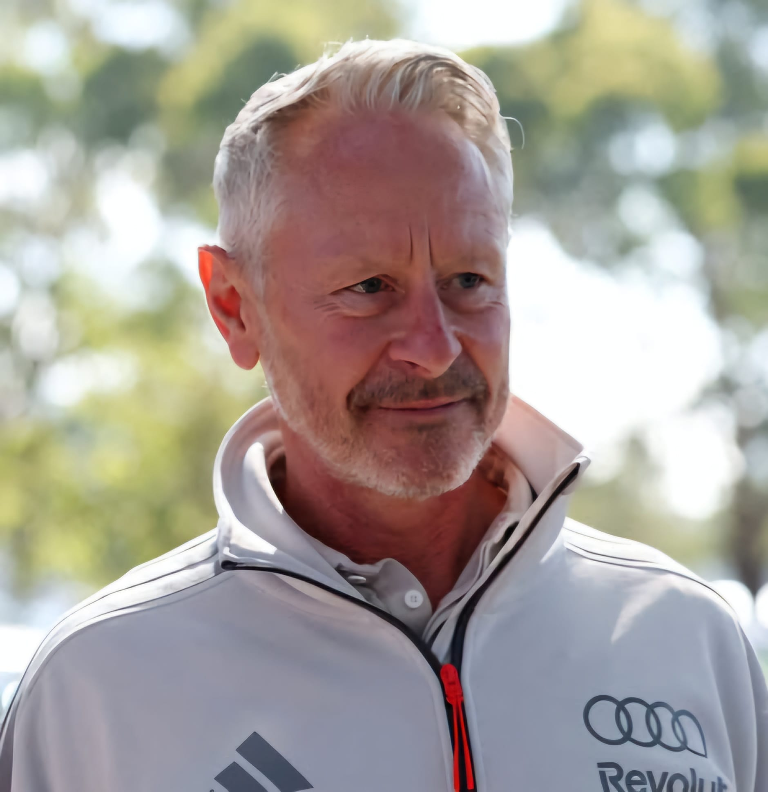

Jonathan Wheatley
Jonathan Wheatley
Team: Aston Martin
Nationality: United Kingdom
Born: 1972
In charge since: 2025
History: Jonathan Wheatley is one of Formula 1’s most experienced operational leaders, with more than three decades in the sport. He began his career as a mechanic at Benetton in 1991, progressing through the ranks to become Chief Mechanic at Renault and contributing to the team’s back-to-back World Championships in 2005 and 2006. Wheatley joined Red Bull Racing in 2006 as Team Manager and later became Sporting Director, playing a central role in the team’s championship-winning success with Sebastian Vettel and Max Verstappen. He gained particular recognition for overseeing race operations, sporting compliance, and the development of Red Bull’s industry-leading pit stop performance. Widely respected for his expertise in race execution, leadership, and Formula 1 sporting regulations, Wheatley was appointed Team Principal of Sauber in 2025 as part of Audi’s Formula 1 project. His career is distinguished by a rare progression from mechanic to senior management, giving him a deep understanding of both the technical and operational aspects of running a successful Formula 1 team.
